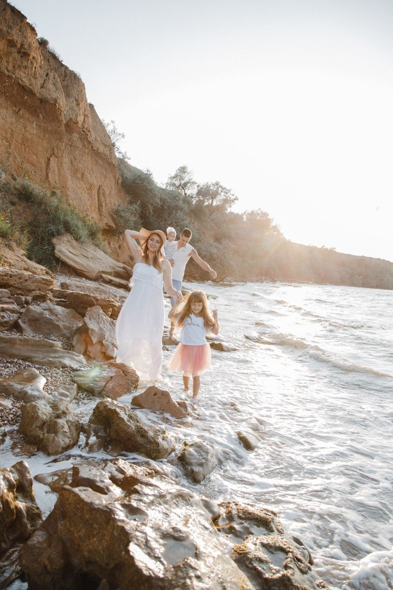
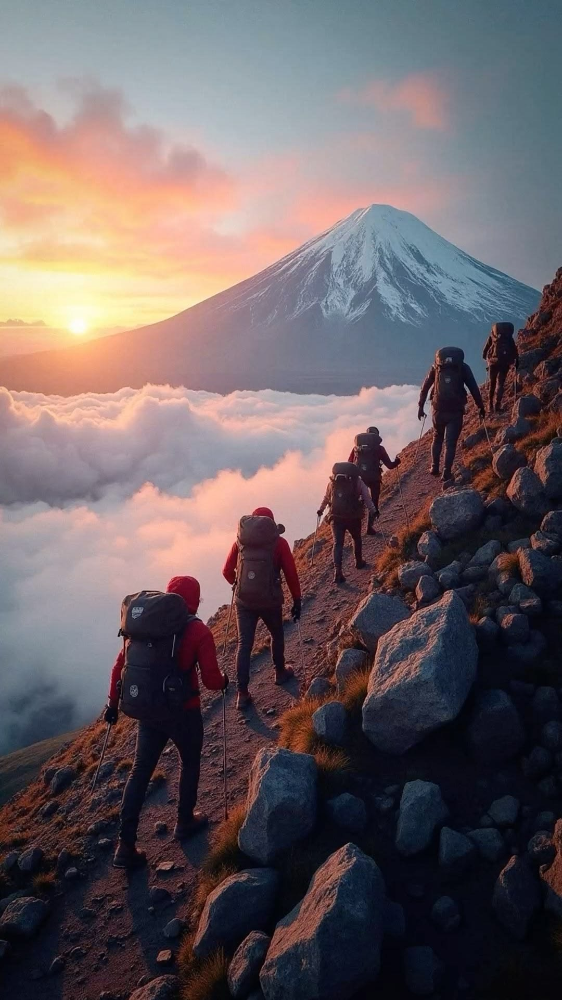
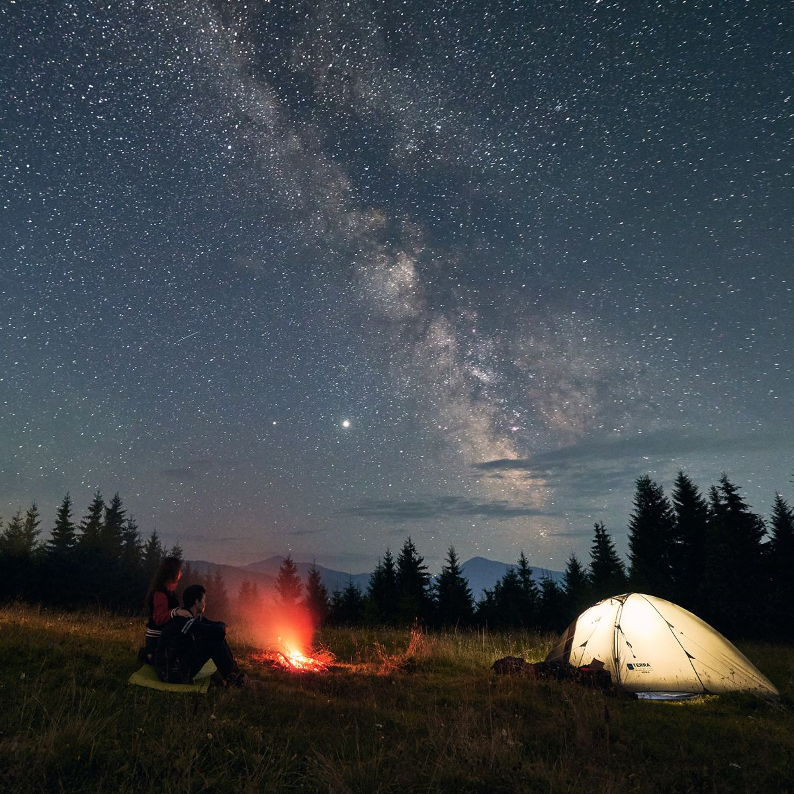
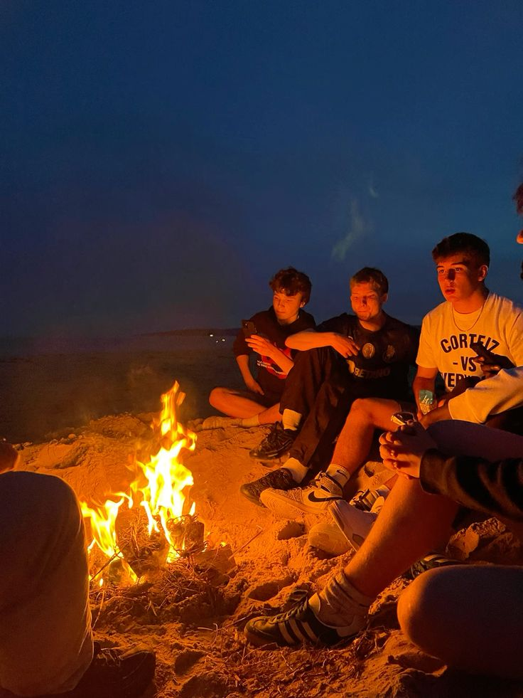
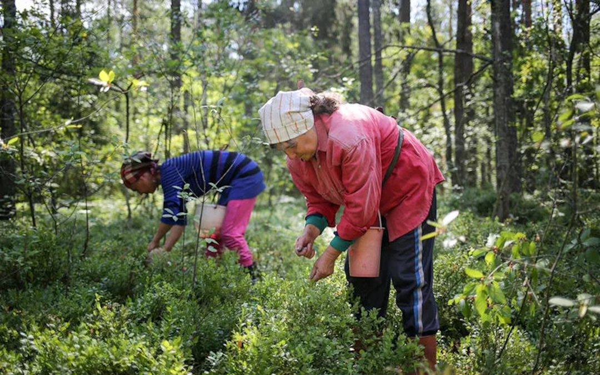

Семьи с детьми, с 10-17 лет
Тур «Загадки побережья», побережье бухты «Токи»

Описание:Поход наименьшей легкости в тур входит игра с детьми, фотосессия на фоне обрыва легенда.
Легенда:Давным-давно, около побережья существовал великий портовый город, известный своим богатством и тайнами. Но однажды во время сильного шторма город был затоплен, и его сокровища исчезли под водами. Легенда гласит, что где-то у этого побережья спрятаны древние сокровища затонувшего города, охраняемые морскими существами и загадками.
Квест:Вы — команда искателей приключений, которая отправилась на поиски легендарных сокровищ. Ваша миссия — найти старинные карты, разгадать морские загадки и преодолеть природные препятствия. В дороге вы познакомитесь с морскими легендами, получите подсказки и выполните увлекательные задания, чтобы приблизиться к заветной цели.
Задачи для участников:Найти «загадочные артефакты» (например, камушки, ракушки или специальные метки) по маршруту. Разгадать морские головоломки и загадки, оставленные легендарными морскими существами. Собрать «сокровища» — коллекцию найденных предметов. В финале — «раскрыть тайну затонувшего города» и найти «клад».
Активные взрослые
Тур «В чем ценность жизни», сопка «Советская»

Введение:Много лет назад, в сердце древних горных хребтов, существовала легендарная сопка — вершина, которая хранила в себе самую ценную из всех тайн: смысл и гармонию жизни.
Суть квеста:Вы — команда искателей философии, роста и самопознания. Ваша миссия — подняться на древнюю сопку, преодолеть испытания и разгадать загадки.
Задачи мотивации и поиска:На пути вас ждут природные «испытания»: восхождение, поговорки и мудрости. Время для размышлений и диалогов о ценностях.
Итог:Поднявшись на вершину, участники не только физически преодолевают трудности, но и внутренне переживают важное приключение.
Иногородние туристы
Тур «Путешествие к морю», побережье бухты «Токи»

Описание:Идем по побережью бухты «Токи», проводим фотосесссию, случаем историю создания района и открытия территорий, легенды и мифы, местных народов, историю открытие порта и прошлое нашего района, узнаем о местных ягодах и растениях, а также узнаем о местных животных.
Легенда:Давным-давно этот район был необитаемым и сейчас мы идем на тот небольшой участок побережья что остался в первозданном виде (смотрим на маяк слушаем его историю) (идем через лес смотрим на кривые деревья побережья) (ищем съедобные ягоды по сезону) (высматриваем птиц слушаем о краснокнижных животных).
Подростки 12-17 лет, молодые люди 18-30 лет
«Звезда побережья», побережье бухты «Токи»

Легенда:Когда-то давно, среди тайн и легенд, существовала особая Гавань — место, где сбываются самые заветные мечты.
История:На далеком побережье, где волны ласково шепчут песни ветра, существует тайное место — Звездная гавань.
Что происходит:Ваша группа — искатели приключений и романтики, отправляющаяся на поиски этой волшебной гавани.
Финал:Это приключение станет не только путешествием по земле, но и путешествием в сердце.
Взрослые 55+
Тур «Лесная ярмарка», ягодные и грибные места

Введение:Давным-давно, в тихих глубинах леса жила мудрая старушка — хранительница лесных тайн.
История:Лес собирает своих лучших гостей — тех, кто знает, как ценить богатства природы.
Что происходит:В походе вы — искатели лесных сокровищ, отправляетесь на поиски ягод и грибов.
Финал:В конце дня вы соберете свой урожай и поделитесь впечатлениями.